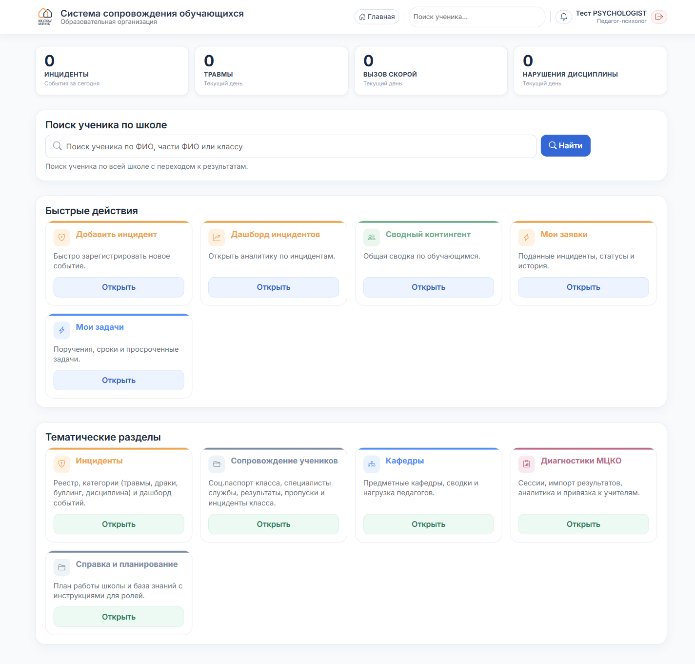

Педагог-психолог
С чего начать
Что это за система, как войти и что вы увидите на главной.
1
Войдите в систему
Откройте в браузере http://10.174.241.7/. Введите логин и пароль, которые выдал администратор.

2
Главная страница
В правом верхнем углу — ваше имя и роль «Педагог-психолог».

3
Сверху — счётчики дня
Четыре плитки вверху показывают события за сегодня: Инциденты · Травмы · Вызовы скорой · Нарушения дисциплины. Клик по любой — ведёт в дашборд инцидентов с готовым фильтром.
4
Быстрые действия
- Добавить инцидент — зарегистрировать событие.
- Дашборд инцидентов — аналитика за период, графики.
- Сводный контингент — общая сводка по школе.
- Мои заявки — инциденты, которые подавали лично вы.
- Мои задачи — поручения.
5
Тематические разделы
- Инциденты — полный реестр, фильтры по категориям (травмы, драки, буллинг, дисциплина).
- Сопровождение учеников — инциденты класса и специалисты службы.
- Кафедры · Диагностики МЦКО · Справка — дополнительные разделы.
6
Что вам доступно
- Полный реестр и дашборд инцидентов по всей школе.
- Открывать личные карточки любого ученика.
- Видеть список всех учеников школы.
- Работать с разделом «Специалисты службы».
Сводный реестр соц. паспортов по всей школе — ограничен. У психолога он доступен через карточку каждого ребёнка индивидуально.